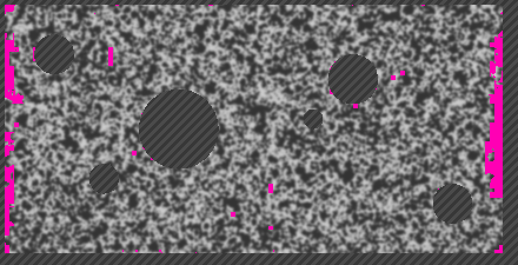

Avant / après, même recadrage
Magenta : matière non couverte ou ajout rejeté. Hachures : hors matière non évaluée.

Les supports tronqués de 16, 24 puis 32 pixels récupèrent des observations là où les supports de 12 pixels échouent. La marge technique seule apporte peu. Un décalage de grille de deux pixels complète la reprise.
Les déplacements déjà couverts et la couronne de 16 pixels autour des trous sont conservés à l'identique. Aucun contour n'est ajusté, aucune extrapolation ne remplit les zones perdues. Seuls les pixels couverts par des supports résolus peuvent être ajoutés.
Magenta : matière non couverte ou ajout rejeté. Hachures : hors matière non évaluée.

Dans la bande extérieure de 12 pixels, les pixels manquants passent de 5 141 à 2 236, soit une diminution de 56,5 %. Des segments restent non résolus.
| Distance au bord extérieur | Pixels couverts avant | Après | Corrélation sur les seuls ajouts |
|---|---|---|---|
| 0–4 px | 1519/5008 | 3862/5008 | 0.866 |
| 4–8 px | 3680/4880 | 4091/4880 | 0.832 |
| 8–12 px | 4300/4752 | 4451/4752 | 0.822 |
| 12–20 px | 8796/9120 | 9013/9120 | 0.830 |
Ces corrélations regroupent les intensités des pixels ajoutés ; ce ne sont pas des erreurs de déplacement ni des taux de convergence.
Sur 4 732 pixels proposés dans la bande de 20 pixels, 3 122 sont conservés après un contrôle supplémentaire : corrélation locale ≥ 0,65 sur un voisinage 9 × 9, au moins 25 échantillons matériels et exclusion des nouveaux replis ou de leurs nouvelles contributions voisines. Les autres restent magenta. Les seuils du solveur local ne sont pas changés.
Test sur une seule paire au niveau 191. Aucun déplacement vrai n'est disponible. Le contrôle photométrique additionnel n'est pas une validation mécanique indépendante. Le champ assemblé reste un diagnostic : les 125 déterminants non positifs préexistants sont toujours présents ; aucun pixel déjà couvert n'a été corrigé par cette reprise.
Les résolutions locales utilisent WebGPU. L'orchestration et le remapping utilisent le processeur central. Les affines locales et leurs tailles de support sont exportées séparément : le catalogue contient plusieurs candidats et ne doit pas être interprété comme une grille unique de paramètres déjà fusionnés.
Initialisations locales et supports · Chiffres bruts · Avant · Après · Propagations précédentes